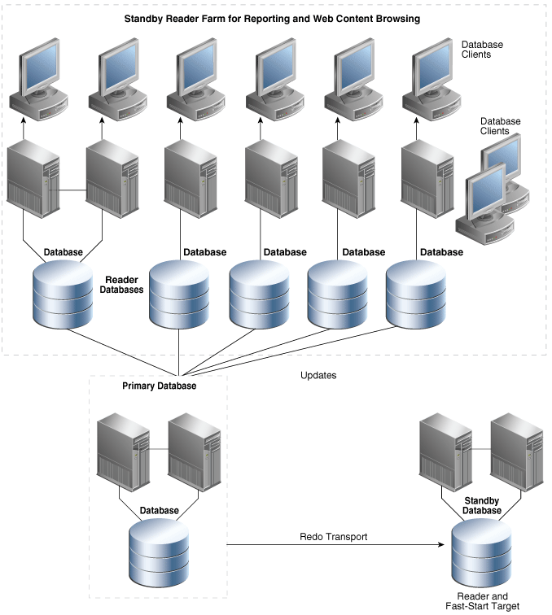

9 Optimizing Return on Investment
The Oracle MAA reference architectures provide for high availability and data protection while also achieving high return on investment (ROI) on all systems and software that are deployed. This is accomplished by efficiently managing workloads in consolidated environments and actively using all systems for productive purposes at all times. This eliminates costly excess capacity and expensive over-provisioning of systems that remain idle until after an outage occurs.
While Oracle MAA reference architectures may be deployed on any commodity platform, there are substantial benefits to their deployment on Oracle Engineered Systems. Oracle integrated hardware and software systems reduce total life cycle costs by using standard, high performance platforms that achieve economies of scale for consolidated environments and DBaaS along multiple dimensions: performance, reliability, manageability, and support. Along the way, Oracle Engineered Systems free your IT staff from mundane systems integration tasks that distract them from focusing on other tasks that deliver higher ROI for your enterprise.
Collectively, these capabilities enable enterprises to achieve their desired goals when embarking upon strategic initiatives for database consolidation and deployment of Database as a Service (DBaaS) in private or public clouds.
This chapter contains the following topics:
Topics:
9.1 High ROI Using Grid Computing
Grid computing is a computing architecture that effectively pools large numbers of servers and storage into a flexible, on-demand computing resource for all enterprise computing needs.
The Oracle Database achieves the cost advantages of Grid enterprise computing without sacrificing performance, scalability, security, manageability, functionality, or system availability.
-
A Database Server Grid is a collection of commodity servers connected to run one or more databases.
-
A Database Storage Grid is a collection of low-cost modular storage arrays accessed by the servers in the Database Server Grid.
The same grid computing concept applies to primary as well as standby database environments. Figure 9-1 illustrates the Database Server Grid and Database Storage Grid in a grid enterprise computing environment.
9.1.1 Database Server Grid
Oracle Real Application Clusters is the technology that enables a Database Server Grid. Oracle RAC is an active-active solution that enables read-write workload for an Oracle database to be automatically load-balanced across all nodes in the cluster. Oracle RAC provides the flexibility to dynamically provision resources and services, and to add or subtract systems from the grid as capacity demands change. In addition, Oracle RAC provides protection from system failures by automatically transitioning clients and redistributing the processing of the failed node to surviving nodes running the same Oracle RAC database.
9.1.2 Database Storage Grid
The Oracle Storage Grid is implemented using Oracle Automatic Storage Management (Oracle ASM) with any third party storage or with storage optimized for the Oracle Database: Oracle Exadata Storage Server, Oracle ZFS storage or Pillar SAN Storage Systems.
A database administrator can use the Oracle ASM interface to specify the disks in the Database Storage Grid that Oracle ASM will manage. Oracle ASM partitions the disk space and evenly distributes the data storage throughout the entire storage array. Additionally, Oracle ASM automatically rebalances the location of data to eliminate hot spots, and redistributes data as disks or storage arrays are added or removed from the Database Storage Grid.
I/O Resource Management (available only for Exadata storage) is used to manage I/O performance and meet service-level requirements in consolidated environments. The resource manager allows you manage the storage grid and prioritize applications within the database or between databases.
9.2 High ROI Using Active Standby Databases
Data Guard standby databases provide data protection, availability, and disaster recovery regardless of the cause or scope of an outage. Outages can range anywhere from data corruption that can affect an individual database, to natural disasters that impact a large geographic area.
Advanced Data Guard capabilities deliver high ROI by enabling standby databases to be used for productive purposes, such as read-only queries and reporting, while operating in the standby role. Rather than allowing standby databases to remain idle, they can be used for workloads that would otherwise require the purchase of additional capacity to support. This effectively reduces the cost of deploying a Data Guard standby to achieve optimal data protection and availability. Oracle Active Data Guard provides advanced data protection for every Oracle Database by supporting all data types, workloads, and applications - there are no limitations or restrictions. Any application that can utilize a database that is open read-only for ad-hoc queries, reporting, data extracts, etc, can also utilize an Oracle Active Data Guard standby database to offload workload from the primary production system
The following sections describe the Data Guard scenarios that provide high business utilization and a maximum return in investment:
Topics:
9.2.1 Oracle Active Data Guard Option for Physical Standby Databases
Data Guard Redo Apply (physical standby database) is an attractive disaster recovery solution due to its relative simplicity, high performance, and superior level of data protection. The Oracle Active Data Guard option (available with Oracle Database 11g Release 1 (11.1) and later releases) enables a physical standby database to be opened for read-only access while Redo Apply is active.
Note:
Oracle Active Data Guard is referred to as real-time query in the Data Guard documentation.
Oracle Active Data Guard includes the following capabilities:
-
Oracle Database In-Memory queries and analytics (new in Oracle Database 12c Release 2)
-
Offload of reporting and ad-hoc queries that include DML to global temporary tables
-
Support for unique global or session sequences on an active standby
-
Real-time cascade for the efficient servicing of multiple remote destinations
-
The ability to extend zero data loss protection to a remote standby database without impacting primary database performance - Active Data Guard Far Sync
-
The ability to perform off-host redo transport compression
-
Automation that simplifies reducing planned downtime using database rolling upgrades
9.2.2 Oracle Active Data Guard Reader Farms
Active Data Guard can be used to deploy multiple active standby databases to easily scale read performance, also referred to as a reader-farm. An example of such a configuration is provided in Figure 9-2, complete with the use of Data Guard fast-start failover to automatically fail over should the primary database fail. Note that all standby databases in the reader farm automatically recognize the new primary database after a failover occurs.
A reader farm enables an application to scale read performance of the most demanding web applications beyond what the underlying system and storage architecture can support. This provides a relatively low-cost method of scaling out simply by adding more Oracle Active Data Guard standby databases.
An Oracle Active Data Guard reader farm provides the following benefits:
-
Simplicity
-
Fault isolation
-
High performance with physical standby databases and Redo Apply
-
Seamless support for all DDL and data types using Redo Apply
-
All reader databases are kept up-to-date with changes made to the primary database
-
Automatic (Fast-Start Failover) or manual failover
-
Zero or near-zero data loss potential
-
Management as a unified configuration through Grid Control
-
Scale-out using single writer database and n reader databases
-
Rolling upgrade capabilities
-
Integrated client failover to production database or other standby databases using Global Data Services
Figure 9-2 Standby Database Reader Farms
Description of "Figure 9-2 Standby Database Reader Farms"
If a fast-start failover is triggered in the Data Guard configuration in Figure 9-2, then:
-
Automatic failover occurs to the designated standby database
-
All standby databases accept data from the new primary database
-
You can perform a switchover at a convenient time in the future to return all databases to their original roles
9.2.3 Data Guard and the Cloud (Data Protection as a Service)
Oracle Active Data Guard can provide Data Protection as a Service for public, private and hybrid clouds. Oracle Enterprise Manager Cloud Control can be used for self-service provisioning of standby databases. Oracle Engineered Systems provide a scalable platform for providing cloud services. Standby databases deployed on the cloud can also support cloning for development and test purposes. For example:
-
A primary database on premises can transmit redo directly or indirectly by using an Active Data Guard Far Sync instance to a standby database deployed on a public cloud. The combination of the on premises primary and public cloud standby is referred to as a hybrid cloud deployment.
-
A standby hub can be used to provide data protection for a private cloud. The standby hub is comprised of a database server grid that centrally hosts standby databases for primary databases distributed across many different data centers.
-
A database deployed on a public cloud may also have a standby database deployed in a different availability zone provided by the public cloud vendor to provide increased data availability and disaster protection.
-
A standby database deployed on the public cloud may be cloned for development and test purposes or may be used directly as a test system using Data Guard snapshot standby.
9.3 High ROI Using Oracle Database Consolidation
Enterprises are under intense pressure to do more with less, to reduce risk, and increase agility. The aggressive consolidation of information technology (IT) infrastructure and deployment of Database as a Service (DBaaS) on public or private clouds is a strategy that many enterprises are pursuing to accomplish these objectives.
Several key elements are needed to realize the full potential for cost reduction through database consolidation and DBaaS. High consolidation density and management simplicity are required to achieve maximum reduction in hardware and administrative costs. These attributes must then be combined with intelligent software infrastructure capable of achieving service level agreements (SLAs) for availability, performance, and data protection.
9.3.1 Multitenant Architecture
Oracle Multitenant fundamentally changes Oracle Database architecture by introducing the concepts of multitenant container databases (CDB) and pluggable databases (PDB). Existing databases can be easily converted to a PDB. Consolidation is achieved by 'plugging in' multiple PDBs into a single CDB. Oracle Database 12c with Oracle Multitenant is engineered to deliver the most efficient platform in every aspect for database consolidation.
A CDB has a single set of background processes and shared memory area (SGA) that is used by all PDBs. This architecture requires less CPU and memory compared to traditional approaches of consolidating multiple independent databases onto a single physical machine, or multiple virtual machines (VMs), or an Oracle RAC cluster. While a CDB can be deployed in either physical or virtual environments, it achieves the highest management and performance efficiency for the database tier when deployed on a physical machine. The CDB itself becomes the virtualization technology for the database tier, eliminating the overhead of multiple VMs and guest operating systems.
Oracle Multitenant also provides a high degree of isolation. A PDB can be easily unplugged from one CDB and plugged into another to allow database administrators the option of performing maintenance on an individual PDB if required. An individual PDB can be provisioned, patched, cloned, consolidated, restored, or moved without impacting other PDBs in the same CDB.
Oracle Multitenant is unique in accomplishing the positive attributes of alternative consolidation methods while avoiding each of their drawbacks. Oracle Multitenant achieves:
-
The simplicity and flexibility of VMs, without the limits to consolidation density, performance, or increased management complexity
-
The high consolidation density of schema consolidation, without the implementation complexity, limited flexibility, and limited isolation
-
The HA, scalability, and automated workload management of simple database consolidation using Oracle RAC with Oracle Database 12c, without the limitations in consolidation density or management complexity of a separate database (each with its own operational overhead) for each application
Oracle Multitenant seamlessly integrates with the HA and data protection capabilities of Oracle Database. This integration combined with Oracle Maximum Availability Architecture (MAA) best practices provides an evolutionary upgrade path to a revolutionary technology for database consolidation.
See Also:
http://www.oracle.com/goto/maa for Oracle MAA white paper "Oracle Maximum Availability Architecture Best Practices for Database Consolidation"
Oracle Database Administrator’s Guide for information about creating and administering pluggable databases.
9.3.2 Oracle Virtualization
Data centers today use virtualization techniques to make abstraction of the physical hardware, create large aggregated pools of logical resources consisting of CPUs, memory, disks, file storage, applications, networking, and offer those resources to users or customers in the form of agile, scalable, consolidated virtual machines. Even though the technology and use cases have evolved, the core meaning of virtualization remains the same: to enable a computing environment to run multiple independent systems at the same time with the main intent of saving people and hardware resources.
Oracle has three main virtualization technologies:
-
Oracle VM for X86 and Oracle VM Manager are an enterprise-class server virtualization solution. Oracle VM Server for x86 is the most scalable x86 server virtualization solution in the market today, and it has been tested to handle mission critical enterprise workloads with support for up to 160 physical CPUs and 2 TB of memory. For virtual machines, Oracle VM 3 can support up to 128 virtual CPUs and 1TB memory per guest VM. Oracle VM supports industry standard x86 operating systems and servers from Oracle and other leading vendors, and it supports a broad range of network and storage devices, making it easy to integrate into your environment. Oracle VM Manager provides an easy-use-centralized management environment for configuring and operating your server, network, and storage infrastructure from a browser based interface (no Java client required), and it is accessible from just about anywhere.
-
Oracle VM Server for SPARC provides highly efficient, enterprise-class virtualization capabilities for Oracle's SPARC T-Series servers. Using the Oracle VM Server for SPARC software, you can create up to 128 virtual servers, called logical domains, on a single system. This kind of configuration enables you to take advantage of the massive thread scale offered by SPARC T-Series servers and the Oracle Solaris OS.
-
Oracle Solaris Zones software partitioning technology, which provides a means of virtualizing operating system services to create an isolated environment for running applications. This isolation prevents processes that are running in one zone from monitoring or affecting processes running in other zones. Zones can be used on any machine that is running the Oracle Solaris 10 or a later Oracle Solaris release. The upper limit for the number of zones on a system is 8192.
-
Note: The Oracle Virtual Compute Appliance is the Oracle Engineered System specifically designed to radically simplify the way customers install, deploy, and manage virtual infrastructures for any Linux, Oracle Solaris, or Microsoft Windows application.
Oracle virtualization can be used in conjunction with HA features and HA architectures to reap the benefits of both target goals. Here are some of the HA benefits when integrating Oracle virtualization with HA architecture and features.
-
Auto restart of VMs in the event of a failure making applications HA
-
Oracle Real Application Clusters ensure business availability at the application layer and is integrated with Oracle VM to ensure business availability on the server as well as application data in a single or multiple geographic locations
-
Generally any Oracle high availability feature, such as RMAN, flashback technologies, Data Guard, and Oracle GoldenGate, that works natively in non-virtualized environments will work seamlessly in a virtualized environment.
-
Oracle VM accelerates the delivery of services to meet changing business need. This allows online growing of capacity
See Also:
-
The Oracle VM website on OTN at
http://www.oracle.com/virtualization -
Oracle Solaris 11.1 Administration: Oracle Solaris Zones, Oracle Solaris 10 Zones, and Resource Management, Part II, "Oracle Solaris Zones" at
http://docs.oracle.com/cd/E26502_01/html/E29024/zones.intro-2.html#scrolltoc
9.4 High ROI Using Oracle Global Data Services
Oracle Global Data Services (GDS) is a complete automated workload management solution for replicated databases that use Oracle Active Data Guard or Oracle GoldenGate. GDS increases ROI by enhancing system utilization, performance, scalability, and availability for application workloads running on replicated databases. GDS provides the following capabilities for a set of replicated databases:
-
Region-based workload routing
-
Connect-time load balancing
-
Run-time load balancing advisory for Oracle integrated clients
-
Inter-database service failover
-
Replication lag based workload routing for Oracle Active Data Guard
-
Role-based global services for Oracle Active Data Guard
-
Centralized workload management framework
Replicated databases within a GDS configuration can be globally distributed or located within the same data center. Clients can securely connect to the GDS configuration by simply specifying a service name, without needing to know anything about the components and topology of the GDS configuration, enabling a highly flexible private cloud deployment for the enterprise.
Geographically dispersed data centers, whether regional or global, can now be effectively utilized within a uniform framework based on business, throughput, and localized demands, without affecting run-time applications.